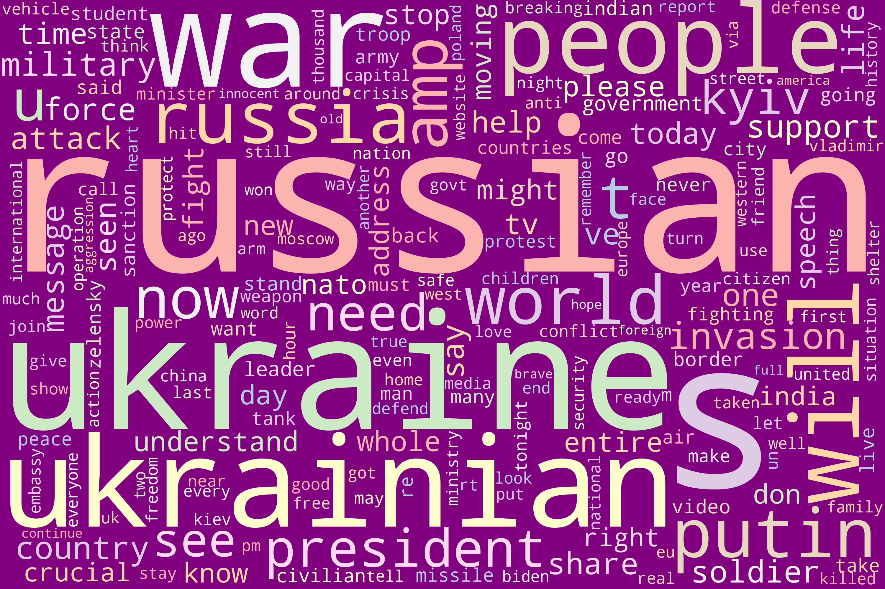
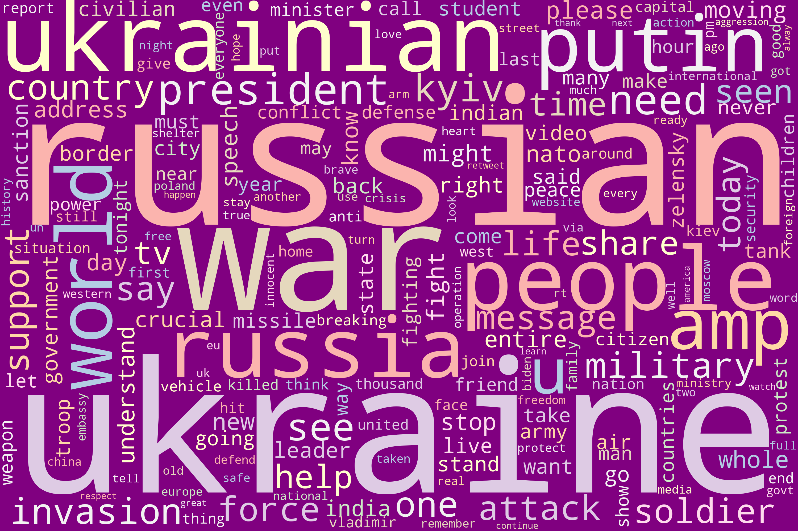

Word Cloud for Sentiment Analysis
What is a Word Cloud
Word clouds are popular for visualizing qualitative data because they are simple to use and provide quick insights at a glance. Word Clouds are ideal ways to pull out the most pertinent parts of textual data, from blog posts to databases. A word cloud is a collection, or cluster, of words depicted in different sizes. The bigger and bolder the word appears, the more often it’s mentioned within a given text and the more important it is. Word clouds (also known as text clouds or tag clouds) work in a simple way: the more a specific word appears in a source of textual data (such as a speech, blog post, or database), the bigger and bolder it appears in the word cloud.1. Word Cloud for Most Popular Hashtags
Word Cloud (a.k.a. Text cloud or tag cloud) is a data visualization of word frequency in the source text. Greater prominence is given to the words that appear more frequently in the source text, making it visually more prominent as well. The example below illustrates the twitter hashtags used in the context of on-going Ukraine-Russia conflict. (The hashtags included in the wordcloud are from Feb 24, 2022 to March 19, 2022.) There are many free libraries available to generate word clouds. This word cloud has been generated using the wordcloud package for python.
2. Word Cloud for Most Commonly Used Words in the Tweets
In a similar manner as above, the wordcloud for English tweets has been created below:
3. Word Cloud using NLTK
One of the libraries widely used for natural language processing is NLTK. It also allows to build a wordcloud to show relative importance of the words. The following word cloud showcases the prominent words from the tweets spanning the 3 week period during Ukraine-Russia conflict.